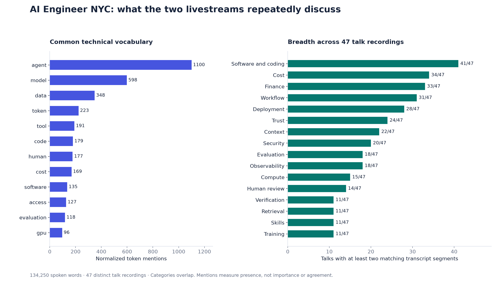
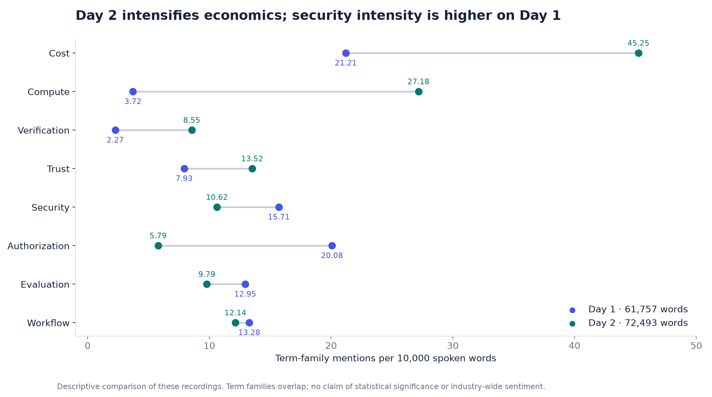

Research preview · October 13–14, 2026 · No changes published to the site
What the two days repeatedly discuss.
Lexical counts, semantic topic discovery, local concept associations, and a sentiment audit of the captured main-stage feeds. The purpose is to help engineers find relevant sessions and compare approaches.
47Distinct talk recordings · 23 + 24
134,250Spoken words · master transcripts
24Explicit, overlapping concept families
838Disjoint context windows · approximately 150 words
Recommendation: a topic atlas with source evidence. For a separate analysis page, make talk coverage and a session-by-topic matrix the main view. Keep the day comparison available for context. Let people select a topic to see sessions and timestamped evidence. Keep the network as an optional exploration. Do not present general sentiment as confidence in AI.
1. What is frequent, and what is widespread?
Raw repetitions and breadth answer different questions. “Agent” appears 1,100 times after grouping agents and agentic. That describes the event’s vocabulary; it is not a useful ranking of engineering priorities.

Categories are lexical proxies. Software and coding includes words such as software and developer. Two matching transcript segments indicate presence, not that the topic is the talk’s main subject.
Explore the evidence
Session × topic matrix prototype
Columns are selected concept families. A filled cell means at least two matching transcript segments. Choose a filled cell to inspect the concept’s sources above. Rows follow the day filter.
Frequent phrases and canonical words
Phrase counts preserve adjacent words, normalize simple variants, and require three talks. Brand and event names can still dominate. “Model Context Protocol” and “MCP” are not merged in this phrase table.
2. The strongest day change is economics
Cost-family terms increase from 21.21 to 45.25 per 10,000 words (2.13 times). Compute-family terms increase from 3.72 to 27.18 (7.31 times). These are descriptive changes within the recordings, not estimates about the industry.

Breadth and intensity can move in opposite directions. Security appears in 8 of 23 Day 1 talks and 12 of 24 Day 2 talks, but its word rate is higher on Day 1. The long authorization panel and focused demos concentrate the discussion. Trust-related language has similar reach across days but a higher word rate on Day 2.
The economics shift also survives equal weighting of talks: mean per-talk rates increase from 21.08 to 51.47 for cost and from 4.03 to 24.89 for compute. This reduces the influence of a long panel, though it does not remove agenda selection effects.
Do not call small coverage differences statistically established. Talk-level resampling intervals are wide for most concepts. There are multiple comparisons, no random sample of speakers, and only two recording days.
3. Which concepts repeatedly connect?
The strongest supported local association is compute ↔ GPU. Authorization ↔ security, GPU ↔ inference, and evaluation ↔ observability also recur across several talks. These pairs are useful reading paths.
Explore the concept network
Choose a node to highlight its neighbors. The connections are undirected co-occurrences. They do not show a pipeline, causation, agreement, or knowledge transfer.
Node size represents talk coverage. Color shows an exploratory community. Edge width represents normalized association.
Both concepts must pass the two-segment presence rule in a talk. Edges then require at least eight co-occurring windows and four talks. This view uses normalized pointwise mutual information of at least 0.08. “Simulation” can be isolated because the support threshold removes its local pairs, not because it is unimportant.
Security and human review often connect groups, but bridge rankings change when the edge threshold changes. Use these connections for exploration; avoid a definitive “most central idea” score.
4. Semantic patterns and reading recommendations
Non-negative matrix factorization (NMF) discovers broad language patterns without using our guide titles or tags. Six components provide a coarse view. Eight and ten expose more detail, including weak components led by partial recordings. The first component is mixed and should not receive a confident single-topic label.
Labels above are our interpretation of the weighted terms. They are not speaker annotations. The eight existing field guides remain editorial navigation; the data does not prove that there are exactly eight topics.
Strong cross-day links worth keeping
Latent semantic analysis suggests these connections. The cosine score measures shared latent vocabulary; it is not a probability, an agreement score, or a measure of practical value. Review each pairing before publishing a recommendation.
Model stability and incomplete recordings
Matching components across seeds gives an average cosine similarity, not accuracy. Removing the Flywire opening excerpt and the cut-off Coder talk changes the six-component solution (mean matched similarity 0.841). Corpus composition and preprocessing matter. A deployment should favor source-linked topic flags over presenting these clusters as ground truth.
5. Sentiment is the weakest public-facing signal
VADER labels 42.5% of eligible Day 1 segments positive and 49.8% on Day 2. That does not mean Day 2’s speakers were more optimistic about AI. The algorithm measures general lexical valence and does not identify the target of an opinion.
We reviewed a balanced, deliberately selected sample of 36 cases. It diagnoses failure modes; it is not a representative accuracy test. Inspect the sample and source timestamps · Read the analyst review notes.
A better future layer: evidence and stance. Label “reported result,” “implementation guidance,” “constraint,” and “future plan” at the claim level. These labels can overlap. A speaker can endorse an approach while stating its limitations.
Prototype regex cues for these frames are exported in framing-cues.json. They are not validated classification. Publishing them as factual labels requires manual review.
6. What makes sense for the website?
Recommended first implementation
- Keep the field guides and experiments as the home page’s main content. Add a compact “Explore recurring topics” link or preview after the guide cards. Start the separate analysis view with 12–16 useful concepts.
- Selecting a concept reveals matched sessions, split by day, and two source passages. Keep the existing topic guides as the route to practical comparisons.
- Make the session × topic matrix a main navigation view on that analysis page. Separate lexical presence from editorial “main topic” labels.
- Add “related concepts” as a short list before building a full graph. Show why each link exists.
- Label the scope, definitions, and incomplete recordings, and expose the downloadable data.
Suggested public wording: “Explore the ideas that recur across both days. See which sessions discuss them, how the emphasis changes, and where the approaches connect.”
This research preview proposes the design. It does not alter or publish the live website.
Methods, limits, and reproducibility
- Only the two captured main-stage feeds and recorded inserts are included. This is not the complete multi-room event.
- Use the master transcript sentences inside the existing session boundaries. Do not count our summaries, biographies, quotes repeated in summaries, or official articles.
- Exclude welcome, breaks, stage transitions, the overlapping General Intuition Q&A record, and the duplicate Intuit record. Keep Q&A already inside the parent keynote once. Brief introductions inside a retained clip can remain.
- Retain the partial Flywire and Coder recordings for lexical analysis. Export a sensitivity fit excluding them.
- Normalize simple variants and contractions; exclude English stop words and spoken filler. Phrase and concept definitions remain inspectable.
- Concept coverage requires two distinct matching transcript segments. Concepts overlap and broad categories are easier to trigger. This is a reproducible lexical proxy, not validated subject labeling.
- Build the network from disjoint windows of roughly 150 words within talks. Require both concepts to pass the talk-presence rule, then require repeated support across talks and use normalized pointwise mutual information to reduce frequency bias.
- Fit exploratory NMF at six, eight, and ten components with three seeds. Use 16-dimensional latent semantic analysis for cross-day similarity. No pretrained embeddings or large-language-model classification are used.
- VADER receives transcript segments with at least eight words, using thresholds ±0.05. Raising the threshold to ±0.5 changes the positive shares to 15.1% and 21.7%, underscoring how presentation depends on the threshold.
- Topic differences reflect who spoke and which program blocks aired. Co-occurrence is not agreement or causation. Automatic transcript errors remain; numerical claims are not verified by counting them.
Method references: NMF topic extraction · latent semantic analysis · VADER, Hutto and Gilbert · community detection and resolution.
Reproduce: install requirements in an isolated environment, then run python3 analyze.py and python3 render.py. Run the scripts from their repository location. The source hashes are recorded in methodology.json. No live source or generated site content is changed.